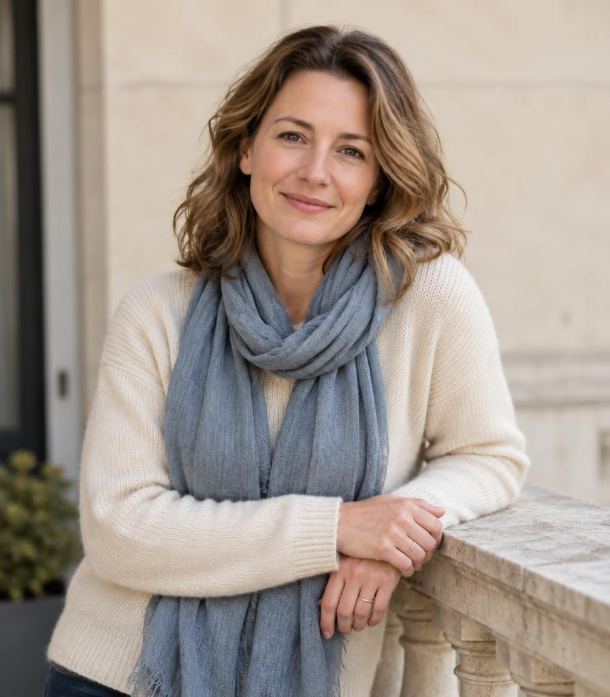

Стосункипрочитаєте за 5 хв · 14.09.2026
Як говорити про почуття, коли страшно бути неправильно зрозумілою
Найважчі розмови часто відкладаються саме тому, що вони важливі. Розповідаю про простий формат, який допомагає почати.
Детальнішероків практики в індивідуальній та груповій терапії
авторських курсів, практикумів і живих зустрічей
доступ до матеріалів — навчайтеся у своєму темпі
учасників пройшли програми простору

Авторка та ведуча онлайн-школи
Найважчі розмови часто відкладаються саме тому, що вони важливі. Розповідаю про простий формат, який допомагає почати.
ДетальнішеЯкщо вихідних не вистачає, щоб відновитися, справа може бути не в кількості відпочинку, а в його якості.
ДетальнішеПерфекціонізм маскується під високі стандарти, але частіше тримає нас на місці. Як поставити ціль, до якої хочеться йти.
ДетальнішеДо курсу
Я постійно погоджувалася на додаткову роботу й не мала жодного вечора для себе.
Після курсу
Тепер я спокійно обговорюю терміни з клієнтами і маю два вільні вечори на тиждень. Виявилося, що мене від цього тільки більше поважають.
«Курс навчив мене чути себе раніше, ніж я втомлюся.»